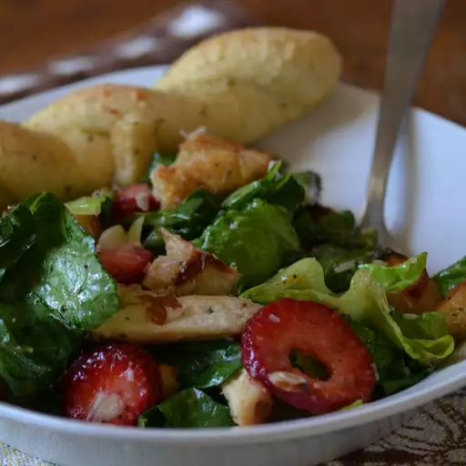

Chicken Berry Salad

Ingredients
- 1 (.75 ounce) packet honey mustard salad dressing mix
- ¼ cup cider vinegar
- ½ cup vegetable oil
- 2 tablespoons orange juice
- 1 pound skinless, boneless chicken breast halves
- 8 cups mixed salad greens
- 1 cup sliced fresh strawberries
- ½ cup fresh blueberries
- ½ cup fresh raspberries
- 8 ounces sugar snap peas
- ½ cup toasted pecans
Steps
- In a medium bowl, prepare the dressing according to package directions, using vinegar and oil, and substituting orange juice for the water; set aside.
- Preheat the grill for high heat.
- Lightly oil the grill grate. Grill the chicken 6 to 8 minutes on each side, or until juices run clear. Remove from heat, cool, and slice into strips.
- In a large bowl, toss together the chicken, salad greens, strawberries, blueberries, raspberries, peas, and pecans. Pour in the prepared dressing, and toss to coat.